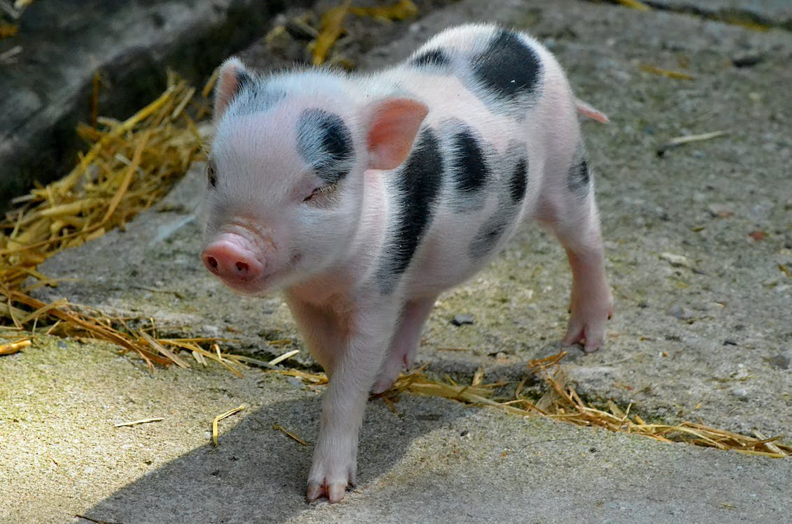
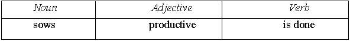
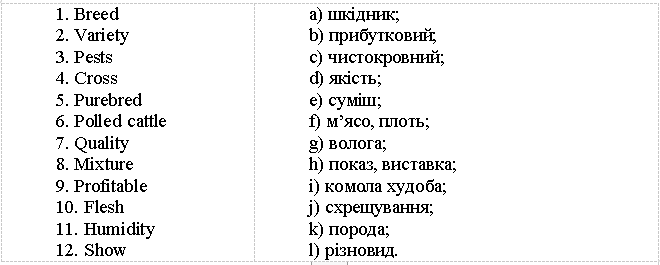

Lesson 11
UNIT 2
My specialty is techologist
BASIC LIVESTOCK PRODUCTION

Pig breeding
Learn the active vocabulary of the Lesson and be ready to
use it in your further work:
Omnivorous
adj – всеїдний; herbivorous adj – травоїдний; thrive v – процвітати; досягати успіхів; stomach n – шлунок; pure breed – чиста порода; sow n – свиня; pigsty n – свинарник; parturition
n – пологи; farrowing
– опорос; litter
of pigs – приплід свиней; close
confinement – тісне утримання; ration
n – раціон; anemia n – анемія; grind
v – перетирати; fiber n – волокно; suck
v – ссати, смоктати; digest v – перетравлювати; monogastric digestive system – моногастральна травна система; all
manner of scraps – всілякі залишки; digestible
carbohydrates – легкозасвоювані вуглеводи; fortified
– укріплений; supplementation
n – добавка; oybean meals – їжа з бобів.
Read
and translate the text: THE
PIG As
we already know, the pig is an omnivorous animal with a simple stomach.
There
are a number of pure breeds of pigs, including Black breeds. White breeds, and
the Tamworths which have a golden-red colour. Crosses commonly show the mixed
colours of the pure breeds. Pigs
thrive in the open air under summer conditions, and they can during warm
weather,
convert their food into meat as economically out-of-doors as in the sty.
A
pregnant pig is called a sow which usually produces from 6 to 12 at a litter.
The act of parturition is called farrowing. On the approach of farrowing a sow
should be in good condition but not fat. Close confinement prior to farrowing is
harmful. Sows suckling litters require somewhat more water. Their rations should
be supplied with micro and macro elements otherwise anemia will result.
One
should remember that the teeth of the pig do not provide conditions for very
fine grinding. That’s why they do not digest the fiber of feeds well.
Pigs
feed on a wide range of foods, including plants, insects, worms, and even small
animals. However, while pigs are mostly herbivorous and only 3–5% of their diet
consists of meat and insects, the inclusion of these foods in their diet is what
makes them omnivores. Like
humans, pigs have a monogastric digestive system, so they can eat various foods
infrequently, unlike cows or deer with multiple stomach chambers that require
them to eat almost constantly. Pigs
can eat all manner of scraps, from bread and fruit to vegetables and grains.
Most domestic pigs are fed on corn-based feeds because these are high in
digestible carbohydrates, low in fiber, and fortified with protein supplements,
but ideally, they’ll need supplementation of other foods too. Pigs can also be
fed on soybean meals, hay, and various vegetables, especially root
vegetables. Due
to the risk of diseases that can be transmitted through meat, domestic pigs are
not usually fed meat and would need a protein supplement instead. Their protein
intake must also increase as they grow, so they are often given whey as their
protein source.
GRAMMAR
EXERCISES
I. Answer the following questions:
1.
How many breeds of pigs do you know? 2. What do crosses commonly show? 3. What
is a pregnant pig called? 4. Has the pig a compound stomach? 5. Can pig convert
their food into meat both out of doors and in the sty? 6. What is harmful for a
pregnant sow? 7. What should the rations of sows suckling litters be supplied
with? 8. Do
the teeth of the pig provide conditions for very fine grinding? 9.
What
digestive system do pigs have? 10.
Why would domestic pigs need a protein supplement?
II.
Group the following by parts of speech:

Animal,
omnivorous, agriculture, can eat, domestic, species, productive, necessity,
main, economic, sows, have become, breeds,
is restricted, food, ancient, help, pigs, prolific, fowls, camel, depend on, is
done, hairless, assist, various, include, important, human, digestive,
can be transmitted.
III. Find an extra word:
a)
pig, horse, yak, fowl, zebu, goat; b)
hunting, animal raising, domestication, taming, breeding; c)
pork, beef, lard, milk, eggs, clothing, mutton; d)
cow, dog, cat, lion, fish, horse, hen; e)
Black pigs, White pigs, the Tamworths, Podolian cattle.
IV.
Form the verbs from the following words and make your own
sentences:
Requirement,
namely, consumption, products, provision, grinding.
V. Translate the following sentences paying attention to
Infinitive function as attribute:
1.
The feed to be given to the sows is of high quality. 2.
The farmer was glad to be given clever advice about the hog managemant.
3.
The pigsty to be built next year will be very big. 4.
These are the hogs to be fattened.
6.
The farmers to raise this new breed of pigs should consult he zootechnician.
7.
The amount of concentrates to be required is to be defined
beforehand.
VI.
Match the words in the left and right columns:

VII. Find
a definition for the following words: VIII.
Read and translate the text:
SELECTED
BREEDS OF PIGS Berkshire
A
breed of domestic pig from England, where in the early 19th century this name
became synonymous with improved pig strains of differing origin and type. The
Berkshire is medium-sized and predominantly black in colour, with white on its
face, legs, and tip of tail. It has a short dished face with erect ears pointing
slightly forward. The breed is used for fresh pork production in England, Japan,
North and South America, and other areas worldwide. A larger bacon strain has
been evolved in Australia
and New Zealand. Duroc
A
breed of pig developed between 1822 and 1877 from the Old Duroc pig of New York
and the Red Jersey pig of New Jersey. Red is the preferred and predominant
colour for the Duroc, though wide variations may occur. Hampshire
Hampshire
is black with a white saddle, which includes the forelegs. Recent selection has
improved the breed's growing ability, and its carcass is among the highest in
quality and quantity of meat. Yorkshire
A
breed of swine produced in the 18th century by crossing white pig of North
England with the smaller, fatter, white Chinese pig. The Yorkshire is probably
the most widely distributed breed of pig in the world.
IX. Answer the following questions:
1.
What shape has the Berkshire? 2.
For what is this breed used? 3.
What colour is the Duroc? 4.
What are the main characteristics of Hampshire? 5.
What are the main characteristics of Yorkshire?
X.
Make up the sentences:
1. since
/ Pigs / ancient / had been domesticated / times. 2.
litter / pig / of / Female / has had / piglets / one. 3. months
/ 6-7 / of / are ready / Gilts / for / age / breeding / at. 4.
Pigs / by / are watched / swineherds. 5. a
/ have / set / Pigs / full / of / 44 / teeth. 6. from
/ pig / domestic / the / The / is called / meet / pork.
XI.
Use all your knowledges about pigs for doing this test: 1.
Synonym to “pig”. 1.
hog 2.
chordate 3.
vertebrate 4.
animal 2.
“Pigs are watched by ____ ”. 1.
swine 2.
swineherds 3.
livestock 4.
their own young 3.
“Pigs have a full set of ____ teeth”. 1.
22 2.
33 3.
44 4.
55 4.
“Pigs are known for their ____ ”. 1.
interest 2.
intonation 3.
interview 4.
intelligence 5.“Pigs
are ____, which means that they consume both plants and animals”. 1.
ungulates 2.
suidae 3.
omnivores 4.
peccaries 6.
“In the wild, pigs are ____ animals”. 1.
meat-eating 2.
foraging 3.
pot-bellied 4.
parasite 7.
“Pigs harbour a range of parasites and diseases that can be ____ to humans”.
1.
used 2.
allowed 3.
introduced 4.
transmitted 8.
“Intensive piggeries are a type of ____ specialized for the raising of domestic
pigs”. 1.
factory farm 2.
house 3.
warehouse 4.
storehouse 9.
“Pigs are generally fed a combination of grain and ____ sources”. 1.
fat 2.
carbohydrate 3.
protein 4.
water 10.
“A “sow stall” is the name of the confinement system for ____ sows”.
1.
piglet 2.
adult 3.
shoat 4. boar